SAMBA

Samba es una implementación de software libre del protocolo SMB que permite compartir archivos e impresoras entre sistemas Unix/Linux y clientes Windows. Puede operar como servidor independiente o integrarse con un dominio, según el diseño y la configuración de la red.
Comparticion de archivos: publica directorios de red mediante recursos compartidos SMB y controla quien puede acceder.
Autenticacion y permisos: combina cuentas del sistema, usuarios Samba y reglas de acceso para proteger los recursos.
Integracion de red: puede trabajar como servidor independiente o participar en entornos de dominio compatibles.
Samba publica recursos definidos en smb.conf y atiende clientes SMB. En un servidor independiente, las cuentas locales y las credenciales Samba deben estar habilitadas; el acceso depende además de los permisos del sistema de archivos y de las reglas del recurso compartido. En redes de dominio, la autenticación y resolución de nombres dependen también de la infraestructura correspondiente.
Samba es útil en entornos donde varias estaciones trabajan con documentos, respaldos, carpetas de producción o recursos compartidos. Permite que equipos Linux y Windows usen el mismo repositorio central sin depender de un sistema propietario.
Su mayor fortaleza es la combinación entre interoperabilidad y control de acceso. Con reglas de permisos, grupos y autenticación bien diseñadas, puede funcionar como una capa de almacenamiento compartido confiable para oficinas pequeñas y medianas.
| Aspecto | Detalle |
|---|---|
| Puertos principales | 137/UDP, 138/UDP, 139/TCP y 445/TCP para SMB/CIFS. Estos puertos permiten compartir archivos y recursos de red. |
| Requisitos comunes | Linux/Unix con paquetes de Samba, usuarios del sistema, permisos de carpetas y red local o dominio configurado. |
| Protocolos | SMB2/SMB3, NetBIOS/Name Service, autenticación local o integrada con dominios compatibles. |
| Casos típicos | Compartir documentos, impresoras, archivos de producción y directorios de trabajo entre equipos Windows y Linux. |
| Consideraciones | Es recomendable limitar usuarios y permisos, usar seguridad por ACL y evitar recursos públicos sin autenticación. |
Nota: Usa el usuario: Archivos, contraseña: Archivo_1234 y carpeta: Archivos
sudo apt update
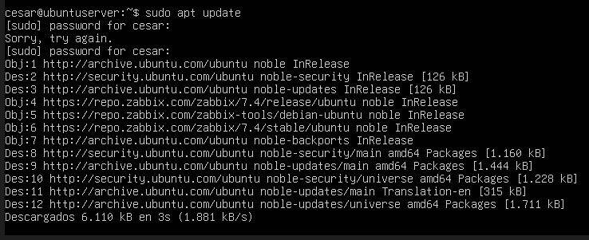
sudo apt install samba -y
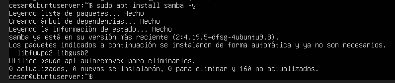
sudo systemctl status smbd
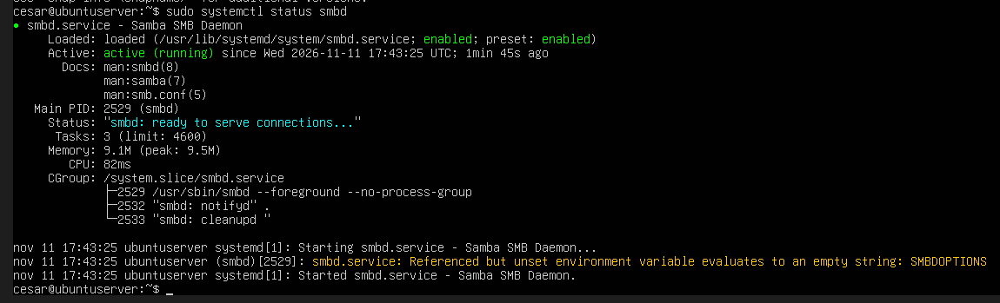
mkdir ~/usuario
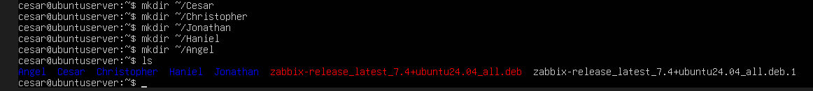
sudo chmod -R 777 ~/usuario
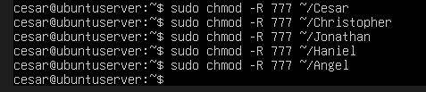
ls -ld ~/usuario
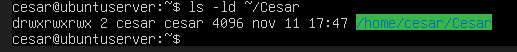
sudo nano /etc/samba/smb.conf
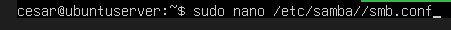
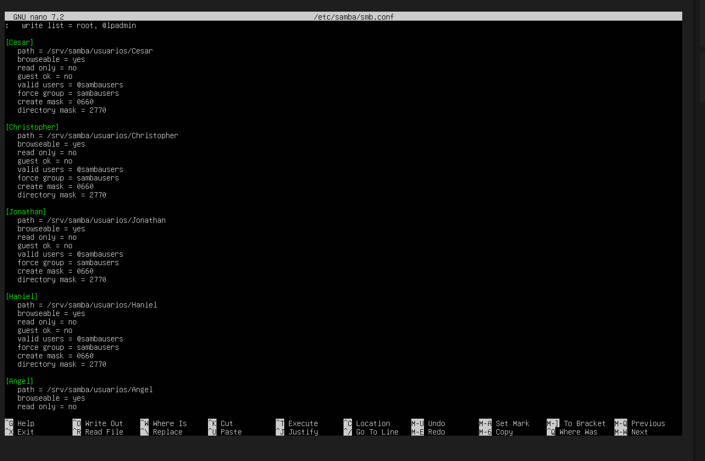
sudo systemctl restart smbd
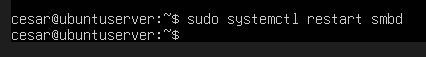
sudo ufw allow samba
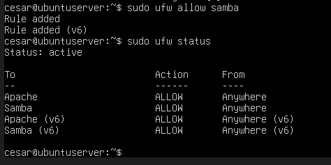
ip a
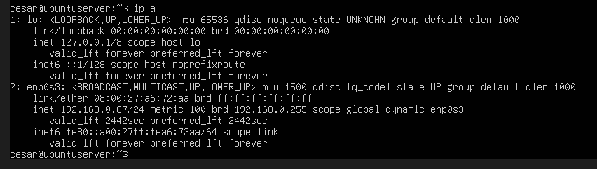
sudo adduser nombre_de_usuario
sudo passwd nombre_de_usuario
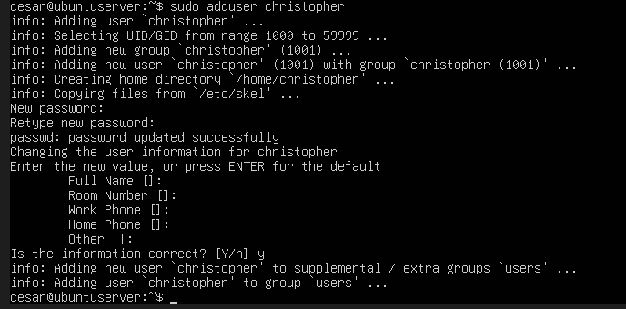
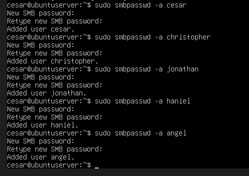
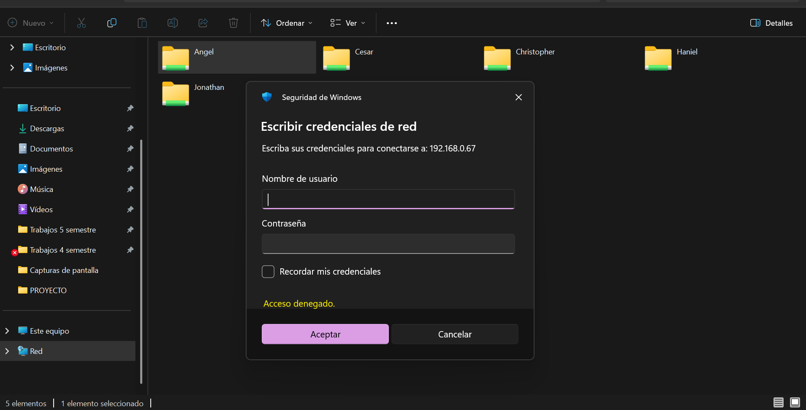
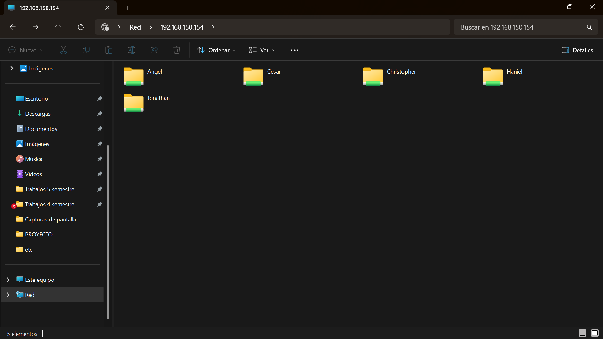
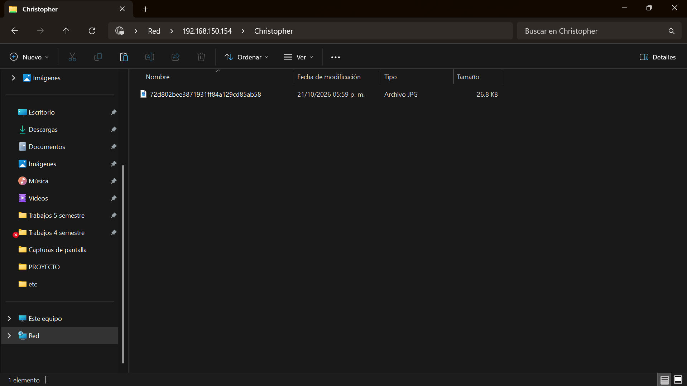
Samba facilita compartir archivos entre Linux/Unix y clientes Windows mediante SMB. Una implementación segura depende de mantener permisos del sistema y del recurso alineados, usar versiones modernas del protocolo y conceder acceso solo a cuentas autorizadas.
| Parámetro | Detalle |
|---|---|
| cesar | 1234 |
| christopher | 1234 |
| jonathan | 1234 |
| haniel | 1234 |
| angel | 1234 |
| Parametro | IP |
|---|---|
| Direccion | 192.168.30.101 |
| Dominio | http://samba.com |